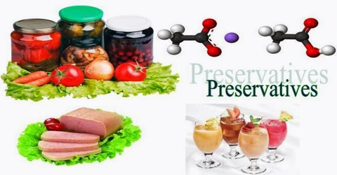

What are food miles? Food miles are miles which food travels to reach your plate.
Benifits of local food
What are the benifits of local food? The benifits of consuming local food insted of imported food are that local food does not contain any preservatives or adverse chemicals where imported food does.
Imported food
How does imported food adversly effects your health? Imported food adversly effect your health because of the harmful chemicals and the preservartives to make that product last very long.

Transportation is causing pollution
Why is transportation causing pollution Transportation is casuing pollution because of food miles. different vechiles cause pollution in different places. For example when you travel food from boat it causes water pollution